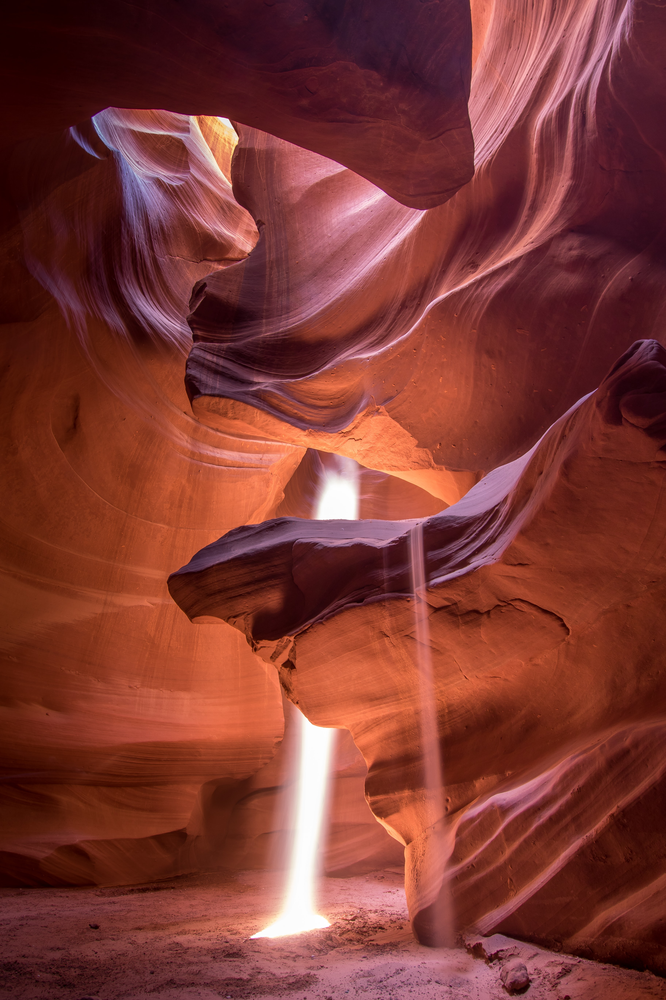

Kevin Cardenas



My name is Kevin Cardenas and I am currently a senior at CUNY Queens College pursuing a Bachelors of Arts in Computer Science. I plan on graduating with a minor in Mathematics and also a minor in Environmental Science. My career goal is to become an Environmental Engineer specializing in hydraulic or atmospheric engineering. I will be pursuing a Civil Engineering Degree at Columbia University in order to pursue this.
Projects
CapitalGaim
Developed during the CUNY Lehman Hackathon. CapitalGaim was a game that my team and I created to offer a different perspective on financial empowerment.
The game consists of a player starting out with a sum of money to be used wisely in buying properties to rent out to tenants. However, you also have to
take into account the impact on the environment, and so an oxygen meter shows the quality of air, over time the meter goes down and the only way to
stabilize the meter is by planting trees which also cost money. The project was developed using the Unity 2D Game Engine using scripts written in C#
Carmogram
Carmogram is an app that my team and I developed during NYUHack. The app aims to assist people who frequently take mediations that have potentially disruptive
side effects. The app has a login system that holds information about medications the user takes and how often they take them. The app displays a chart of information
on how they feel after taking their medications and shows them the optimal time for them to take each medication based on previous input. Over time the app adjusts its recommendation.
The app was developed by using React Native
EpicSauceTM
EpicSauceTM is a website developed by my colleagues and I for our Web Development Class. The website serves as a testing platform with an implementation of a registration system,
a login system, functionality allowing a professor to create assignments, create questions, and add questions to assignments, and for the student side functionality that allows
them to take assignments and then view their grade. The project implements php, html, css, javascript, and mysql.
Personal Website
I developed this website to display past projects I have done, and the skills I learned in developing these projects. For the future this website will still hold projects most likely
having to do with engineering.